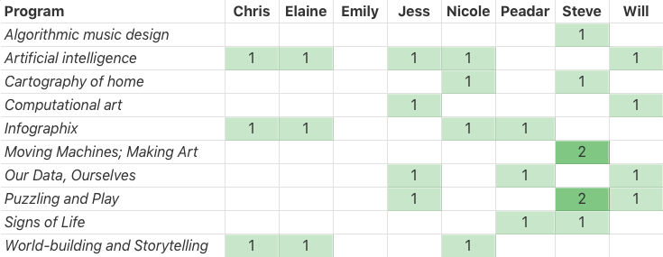

What makes projects & programs good/hard?
SSA @ Healey, 23 June 2016
What makes for good projects?
What makes projects hard to do [well]?
What do we worry about?
What will the arc of your program look like?
Finalizing program choice, schedule, and individual next steps
Making something physical
(1h, 9—10AM)
Making something digital
(1h, 10—11AM)
What's hard about real projects, what do we worry about?
(30m, 11—11:30AM)
Lunch
(45m, 11:30AM—12:15PM)
What makes for a good program? What would success mean for us?
(30m, 12:15—12:45PM)
Brainstorming program arc
(1h, 12:45—1:45PM)
Review suggested readings; brainstorm next steps; draft individualized write-up
(15m, 1:45–2PM)
Fun activity;
bad project
scratch.mit.edu
Champagne's sweater
Rorschach Scratch
Pair up and make a Scratch project avatar for yourself and your partner,
a la
these examples
What was hard?
What worries you?
What's essential to a good project?
What excites you?
Lunch
Hard [for them],
meaningful [to them],
intended for a real audience
If people are going to share a project with a real audience…
…then they have to make a project of their own design…
…which means they have to scope and design their own project…
…which means they need a well-chosen space of projects to expose them to (and engage them with) what's possible
Expose & engage
Engage, brainstorm, & scope projects
[Do it]
Share with a real audience
Pair up and choose one of the programs which interested you

Algorithmic music design
Artificial intelligence
Computational art
Infographix
Moving machines; making art
Our data, ourselves
Puzzling and play
Signs of life
Cartography and mapping
Worldbuilding & storytelling
…brainstorm and sketch out a handful of 1) activities which could effectively expose and engage people, and 2) projects which you'd be excited to see a young person have done by the end of the program.
…and then take a photo of those notes and email it to
team@thesprouts.org
Thoughts on
the day?
Loading...